18日目～スマトラ島との別れ～
今日はバタビア航空の便で懐かしのジャワ島、ジャカルタへと戻る日だ。
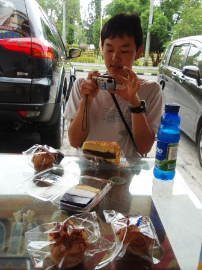
腹痛のため山部は朝からダウン。KENと大井の二人で昨日のベーカリーショップで朝食をとった。
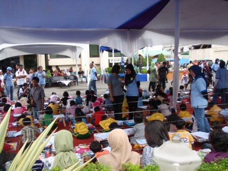
近所の銀行前広場で行われていたちびっこ達のお絵かき大会。
別行動～山部編～
昼から体調の良くなかった山部と二人は別行動をとることにした。
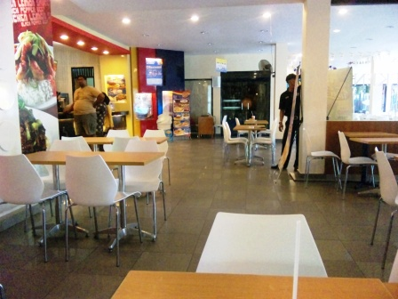
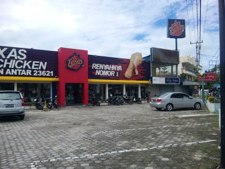
まず腹を満たすため、ブキティンギのデパートにもあったテキサスチキンへ。
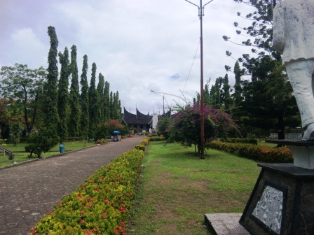
体調がよくないのでずっと店舗内にいるつもりだったが、それはそれで退屈なのでテキサスチキンのすぐ近くにあったミナンカバウ族の歴史などを紹介した入場料15円程度の博物館に出かけた。
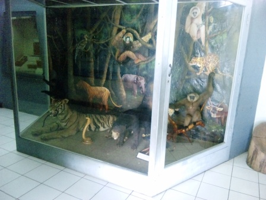
最も小さいトラ、スマトラトラ等のはく製。
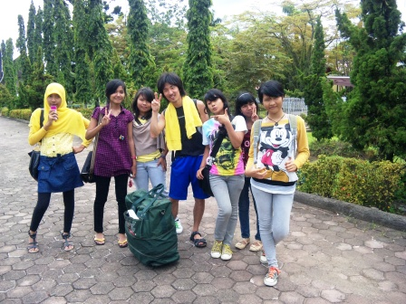
博物館に入って15分ほどたったころ、女の子達が周りを取り囲み、今時間あいてますかぁと尋ねてきた。飛行場に行くためのバスの停留所を集合場所にしており、まだ2時間弱あったのでOKすると、女の子たちはキャ～ッと喜んでグループの一人が思いっきり胸を肩に押し付ける感じでしがみついて、そのままの格好で付近のなんとか学校というところまで連れて行ってくれた。いつの間にか腹痛は完全に治っている。この子たちは地元に住む高校生たちで、年齢は約16歳。これから行くところはこの子たちの通う国際学校のようなところらしい。
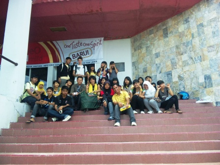
学校でも大歓迎され、先生たちと日本やインドネシアについて語り合い、バス停までは先生がバイクで送ってくれた。腹痛と格闘していた朝には予想もしていなかった充実した時間になった。
別行動～大井＆KEN編～
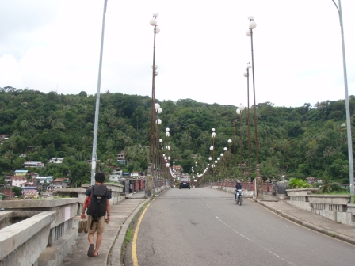
二人は宿からは少し距離のあるシティ・ヌルバヤ公園に向かった。
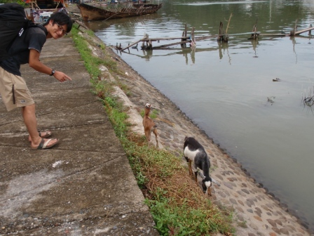
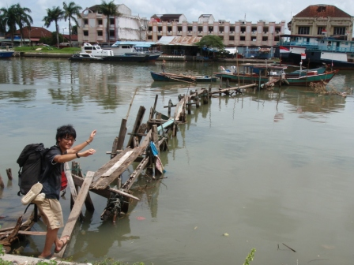
しかし荒廃した建物群や、ヤギとその水死体を見ただけで、ありがた迷惑な案内をする市民のせいで公園にたどり着くこともできずバス停に戻ってくることとなってしまった。
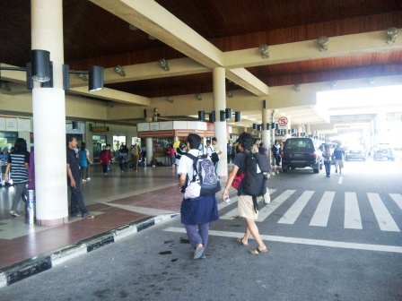
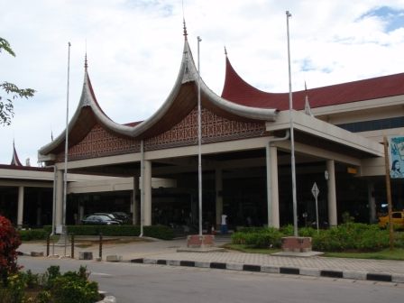
バス停で1時間ほど待つとようやくジャカルタでもお世話になったダムリのバスがやってきた。空港の建物はミナンカバウ族の伝統家屋を模した作りでいい雰囲気だった。
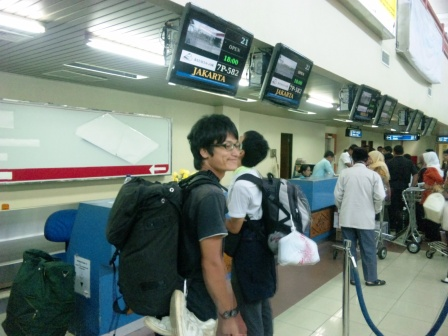
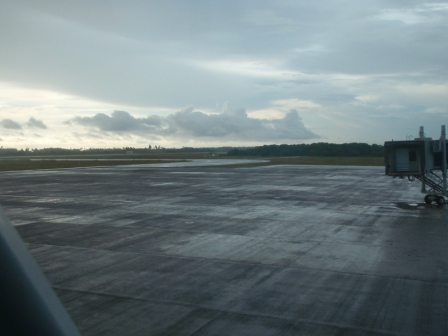
チェックインを済ませ、しばらく待合室で待つとちゃんと時間通りにアナウンスが流れた。やるじゃないかバタビア航空！パダンの空港もまわりには何もない簡素な造りだ。マタラムの空港とは違い、ちゃんと飛行機までは通路があった。
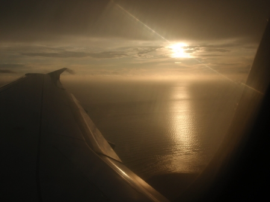
ジャカルタに向かう機内で見た夕日。
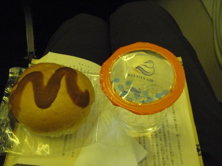
機内食は出なかったが、菓子パンとお水が出された。
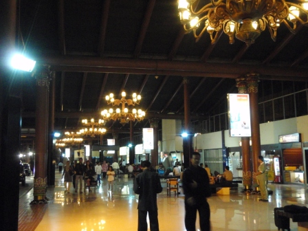
約10日間ぶりのジャカルタへ到着！
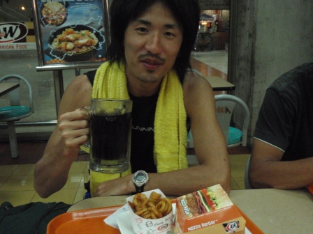
安宿を電話で予約しておいたので時間は余裕があった。夕食は飛行場で3回目のA＆W。
翌日へ